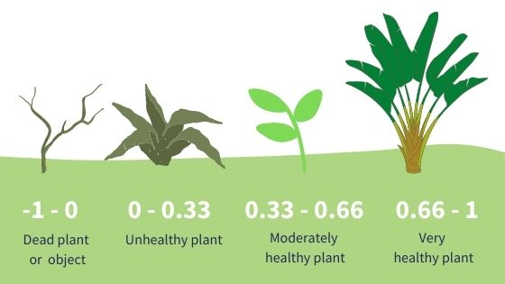
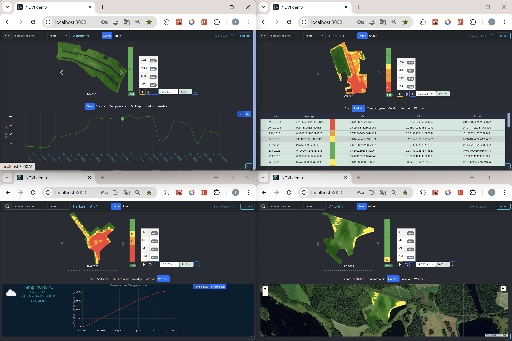
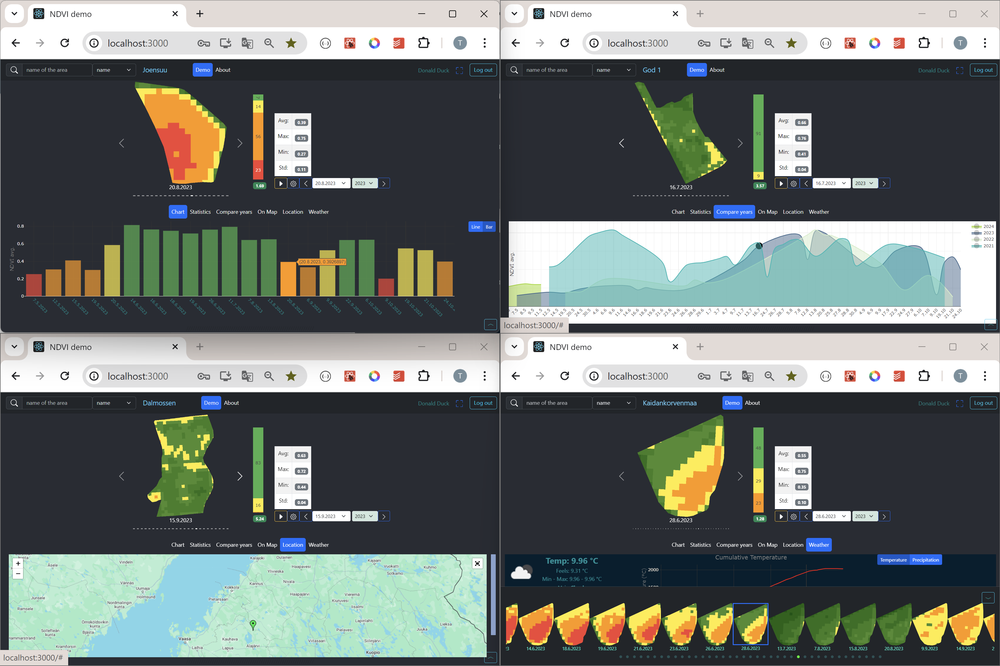

NDVI demo for Agriculture
Client application which requests NDVI information from RESTful API server. This is a frontend for the backend, which is implemented for the project Data Modelling and Back-end Development, YTSP0200-3004 This application shows the NDVI images for the specifig area of interest (e.g. plant, field, forest) in range of dates of few years from the growing season to the harvest.
NDVI (Normalized Difference Vegetation Index)
The well known and widely used NDVI is a simple, but effective index for quantifying green vegetation. It normalizes green leaf scattering in Near Infra-red wavelengths with chlorophyll absorption in red wavelengths. The value range of the NDVI is -1 to 1. Negative values of NDVI (values approaching -1) correspond to water. Values close to zero (-0.1 to 0.1) generally correspond to barren areas of rock, sand, or snow. Low, positive values represent shrub and grassland (approximately 0.2 to 0.4), while high values indicate temperate and tropical rainforests (values approaching 1). It is a good proxy for live green vegetation.

Some views of the application in use
 
In this document is used abbreviation AOI which stands for Area Of Interest, which in this case means field, plant, forest...